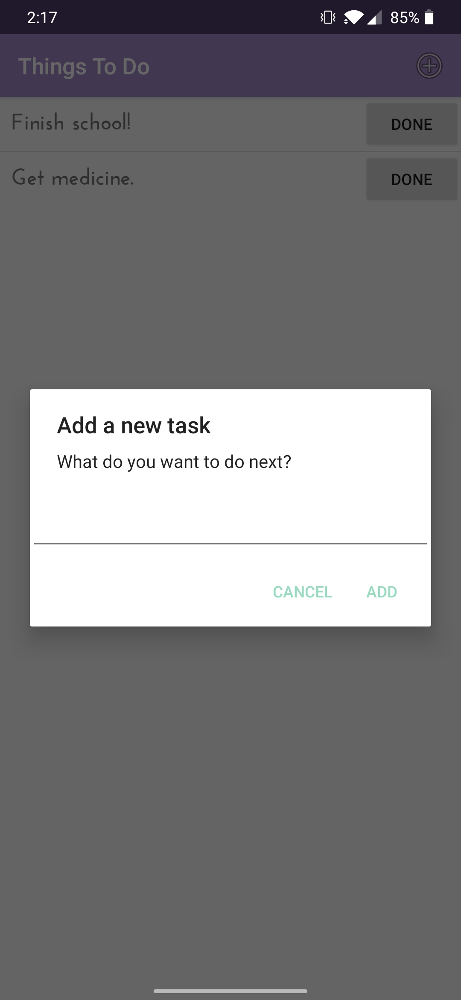
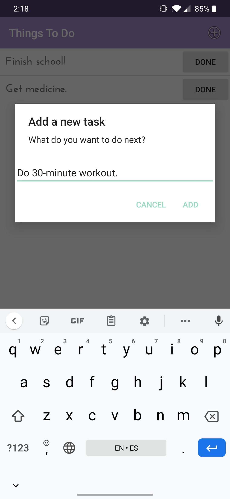

This application is one of my first Android applications. It is a simple to-do list that utilizes an SQLite database for user data storage and manipulation.
Statistics:
- Made in Android Studio
- Language: Java
- API: 29 (Pie)
Screenshots of the app were taken on a OnePlus 6T running Android 10.
Main Activity:
Add a task:
Enter text:
New task appears on list:
Delete an activity by pressing "Done":
Download the .APK!
Requirements: An Android device running Android 9.0 or higher.